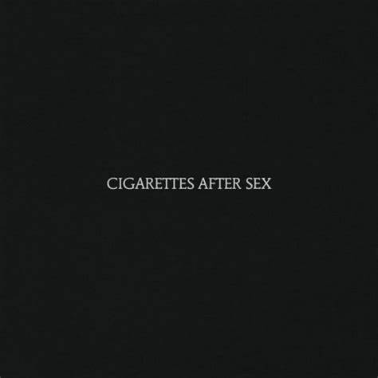
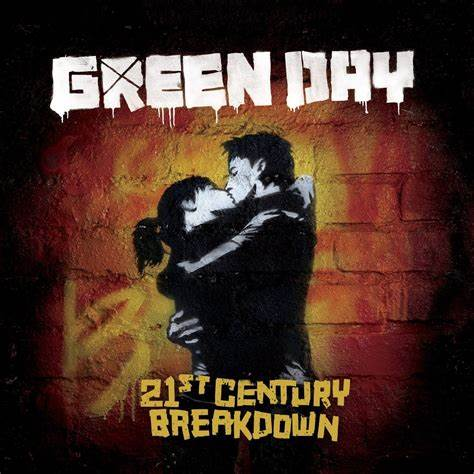
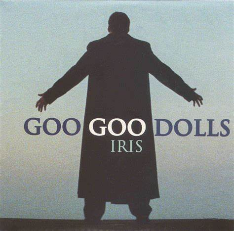
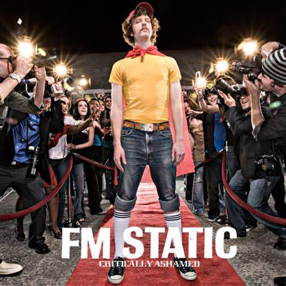
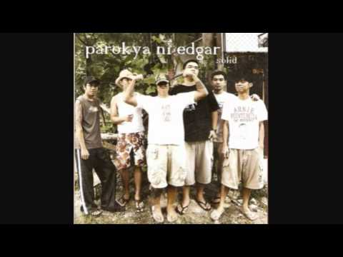
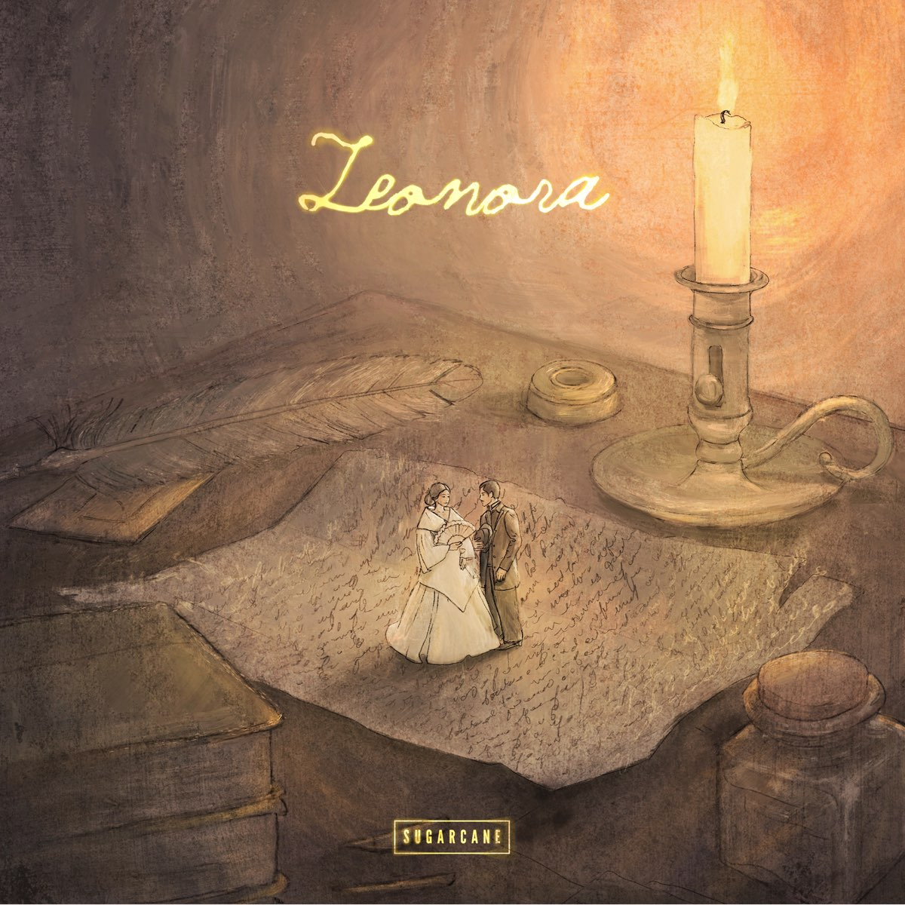
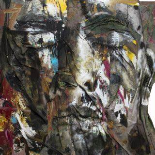

Indie
The Indie genre, short for "independent," refers to music produced outside of major record labels. Here are some of my favorites:
- "Alexandra" - Reality Club
- Artist: Reality Club
- Album: What Do You Really Know? (2019)
- Genre: Indie rock
- Themes: Longing, introspection, emotional expression
- Composition & Arrangement: Faiz Novascotia Saripudin, Fathia Izzati, Era Patigo Rizky, Anugrah Wicaksono
- "Number One Party Anthem" - Arctic Monkey
- Artist: Arctic Monkeys
- Album: AM (2013)
- Genre: Alternative rock, indie rock
- Themes: Loneliness, longing, superficiality of nightlife
- "Sweet" - Cigarettes After Sex
- Artist: Cigarettes After Sex
- Album: Cigarettes After Sex (2017)
- Genre: Indie pop, dream pop, slowcore
- Themes: Unspoken understanding in a relationship
{kind=link}
")

{kind=link}
Alternative Rock
A mix of rock with pop elements, making it radio-friendly. Here are some hits:
- "Last Night On Earth" - Green Day
- Artist: Green Day
- Album: 21st Century Breakdown (2009)
- Genre: Alternative rock, ballad
- Themes: Deep, unwavering love and devotion
- "Iris" - Goo Goo Dolls\
- Artist: Goo Goo Dolls
- Album: Dizzy Up the Girl (1998)
- Genre: Alternative rock, pop-rock
- Themes: Deep, unconditional love
- "Tonight" - FM Static
- Artist: FM Static
- Album: Critically Ashamed (2006)
- Genre: Christian rock, pop punk
- Themes: Nostalgia and reminiscence

{kind=link}

{kind=link}

{kind=link}
OPM
Only Pinoy Music. Here are some classics:
- "Wag Mo Na Sana" - Parokya Ni Edgar
- Artist: Parokya ni Edgar
- Album: Gulong Itlog Gulong (1999)
- Genre: Alternative rock, Pinoy rock, OPM
- Themes: Unrequited love
- "Leonora" - Sugarcane
- Artist: Sugarcane
- Album:Leonora (2023)
- Genre: OPM, Filipino indie, acoustic pop
- Themes: Deep affection and admiration
- "Simula" - Munimuni
- Artist: Munimuni
- Album:Kulayan Natin (2019)
- Genre: Indie folk, alternative, OPM
- Themes: New beginnings

{kind=link}

{kind=link}

{kind=link}